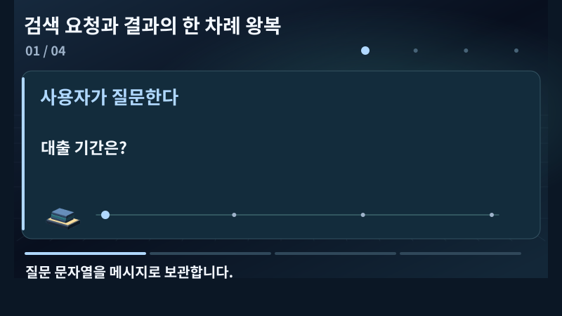
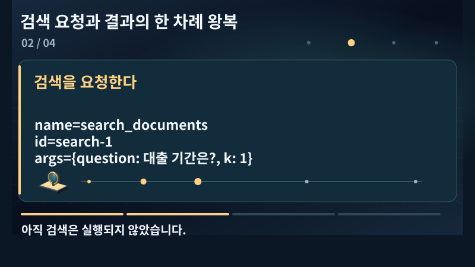
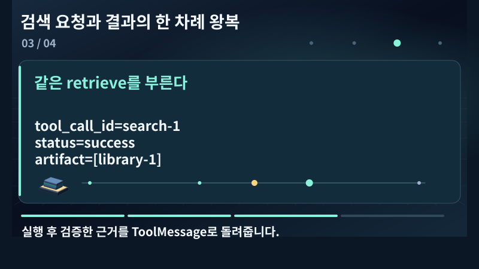
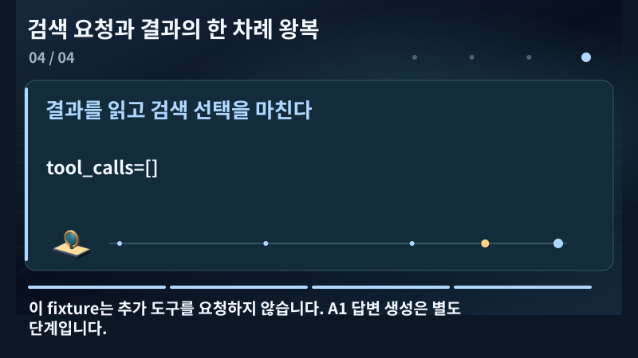

같은 검색 함수를 Tool로 포장하기
모델이 ‘도서관 자료를 찾아 달라’고 요청해도 검색은 아직 실행되지 않았습니다. 도구 요청의 이름과 인자를 읽고, 검색을 실행한 뒤 요청 ID가 붙은 결과를 돌려보냅니다.
수업 노트북
실행을 확인한 커널은 Python 3.12.15입니다. 예제에 사용한 외부 패키지는 langchain-core 1.6.12, pydantic 2.14.1입니다.
도구 명세와 호출 요청 읽기
‘검색 함수’에서 출발해 ‘도구 명세’를 거친 뒤 ‘모델의 요청’가 되는 순서를 따라가세요.
모델은 검색 도구의 이름과 인자를 요청합니다.
같은 retrieve를 수업용 검색 도구로 감쌉니다. 이름과 인자 규칙은 모델이 검색 요청을 작성할 때 읽습니다. 이 노트북에서는 모델이 보낼 법한 요청 한 건을 직접 만들어 네트워크 없이 실제 LangChain 도구에 전달합니다.
셀 01 · 제공 셀 · 검색 도구 등록하기
자료와 검색 함수는 30장과 같습니다. 맨 아래 search_documents의 이름과 k 인자 규칙만 찾아보세요.
records = [{'id': 'library-1',
'text': '도서 대출 기간은 14일입니다.',
'source': '가상 도서관 이용 안내',
'page': 1},
{'id': 'library-2',
'text': '도서관은 월요일에 휴관합니다.',
'source': '가상 도서관 이용 안내',
'page': 2},
{'id': 'library-3',
'text': '무인 반납함은 24시간 이용할 수 있습니다.',
'source': '가상 도서관 이용 안내',
'page': 3}]
terms = ("대출", "휴관", "반납")
def retrieve(question, k=1):
query = [int(term in question) for term in terms]
if not any(query):
return []
def distance(row):
vector = [int(term in row["text"]) for term in terms]
return sum((a-b)**2 for a, b in zip(query, vector)), row["id"]
return sorted(records, key=distance)[:k]
from langchain_core.tools import tool
from langchain_core.messages import AIMessage
from pydantic import BaseModel, ConfigDict, StrictInt, StrictStr, Field
class SearchArgs(BaseModel):
model_config = ConfigDict(extra="forbid")
question: StrictStr
k: StrictInt = Field(default=2, ge=1)
@tool("search_documents", args_schema=SearchArgs, response_format="content_and_artifact")
def search_documents(question: str, k: int = 2):
"""가상 도서관의 대출·휴관·반납 안내를 찾습니다."""
if not question.strip():
raise ValueError("질문을 입력하세요.")
found = retrieve(question, k)
return "\n".join(row["text"] for row in found), found
print(search_documents.name)실행 결과
search_documents
등록된 이름은 search_documents입니다. 이 이름을 찍은 것만으로는 검색을 한 번도 실행하지 않았습니다.
셀 02 · 요청 한 건 만들기
질문과 k가 담긴 도구 호출을 AIMessage에서 꺼내세요.
request = AIMessage(content='', tool_calls=[{'id': 'search-1', 'name': 'search_documents', 'args': {'question': '대출 기간은?', 'k': 1}, 'type': 'tool_call'}])
call = request.tool_calls[0]
print(call['args'])실행 결과
{'question': '대출 기간은?', 'k': 1}대출 질문과 검색 상한 1이 나옵니다. 이 시점에는 문서가 없습니다.
요청 ID를 붙여 검색 결과 돌려주기
‘search-1’를 기준으로 양쪽의 ‘검색 요청’와 ‘검색 결과’를 대조하세요.
검색 결과에 요청 ID를 붙여 모델에 돌려줍니다.
invoke에 인자만 넘길 때와 달리 호출 ID까지 포함한 요청을 건네면 ToolMessage에서 어느 요청의 결과인지 읽을 수 있습니다. 화면에는 실제 검색 자료를 싣고 메시지에는 다음 판단에 필요한 내용을 담습니다.
과제 03 · 답을 기다리는 요청과 결과 연결하기
call을 도구로 실행한 뒤 tool_call_id와 첫 문서의 id를 표시하세요.
이 셀의 content에는 검색한 문서의 본문이 일반 문자열로 들어갑니다. artifact에는 id·text·source·page를 보관합니다. 참고 구현은 content를 JSON 문자열로 만들지만 여기서는 도서관 안내 문장을 그대로 읽으세요.
# call 전체를 search_documents.invoke에 넘기세요.풀이와 실행 결과 보기
reply = search_documents.invoke(call)
print(reply.tool_call_id, reply.artifact[0]['id'])실행 결과
search-1 library-1
search-1은 요청 식별자, library-1은 근거 문서 식별자입니다. 이 둘을 바꿔 쓰면 다음 판단에서 어떤 요청에 답이 왔는지 찾기 어렵습니다.
다시 풀어 보기
도구 응답이 빈 목록이면 호출 자체는 끝난 상태입니다. 검색 호출을 건너뛴 경우와 구별할 수 있도록 요청 ID, 실행 여부, 자료 목록을 함께 읽으세요.
관련 개념 더 읽기
요청에 이름만 있는데 도구는 언제 실행될까요?
도구를 사용하겠다는 요청은 AIMessage.tool_calls에 들어갑니다. 아래는 모델이 요청했다고 가정해 직접 만든 메시지입니다. name은 실행할 도구 이름, args는 인자, id는 이번 요청의 식별자입니다. type="tool_call"은 일반 인자 dict와 구분해 프레임워크에 전달하는 표시입니다.
AIMessage를 만들기만 해서는 Python 함수가 실행되지 않습니다. 프로그램이 요청을 읽고 허용한 도구인지 확인한 뒤 invoke를 호출해야 검색이 일어납니다. 이 교재는 한 응답에 한 도구만 요청하는 범위를 사용합니다. 복수 요청을 받으면 임의로 첫 번째만 실행하지 않고 오류로 멈춥니다.
일반 args만 invoke에 넘기면 반환 표현이 달라질 수 있습니다. 여기서는 id와 type이 있는 전체 도구 요청을 넘겨 ToolMessage가 만들어지는 경로를 확인합니다. 실행 가능한 전체 흐름은 roundtrip.py에 있습니다.
어느 요청의 응답인지 어떻게 알까요?
ToolMessage는 도구를 실행한 결과 메시지입니다. tool_call_id가 앞선 요청의 id와 같아야 모델이 어느 요청에 대한 결과인지 알 수 있습니다. name만 같아서는 같은 도구를 여러 번 부른 결과를 구별할 수 없습니다.
content에는 JSON 문자열이 있고 artifact에는 같은 문서 dict 목록이 있습니다. sources에 무엇을 인용할지는 아직 정하지 않았습니다. 검색된 문서와 최종 답변에서 실제로 인용한 문서는 나중에 A1이 나누어 기록합니다.
| 위치 | 실제 예 | 역할 |
|---|---|---|
| AIMessage.tool_calls[0].id | search-1 | 이번 검색 요청 번호 |
| ToolMessage.tool_call_id | search-1 | 같은 요청에 답한 결과 |
| ToolMessage.status | success | 도구 실행의 성공 여부 |
| ToolMessage.content | 문서 목록을 담은 JSON 문자열 | 다음 판단에 전달할 내용 |
| ToolMessage.artifact[0].page | 1 | 프로그램이 보관하는 근거 페이지 |
검색 요청과 결과의 한 차례 왕복
전체 메시지 왕복을 보여 주는 참고 그림입니다. 기본 과제에서는 검색 요청과 반환 메시지의 search-1을 대조하세요. library-1은 찾아낸 문서 번호입니다.
모델의 요청 ID를 결과 메시지에서 다시 찾아보세요.
도구로 감싼 검색 함수의 반환값은 원래 호출 ID를 붙여 모델에 전달해야 합니다.
- 01질문
- 02요청
- 03실행
- 04재판단

STEP 01 · HumanMessage사용자가 질문한다
질문 문자열을 메시지로 보관합니다.
대출 기간은?

STEP 02 · AIMessage검색을 요청한다
아직 검색은 실행되지 않았습니다.
name=search_documents
id=search-1
args={question: 대출 기간은?, k: 1}
STEP 03 · Python Tool같은 retrieve를 부른다
실행 후 검증한 근거를 ToolMessage로 돌려줍니다.
tool_call_id=search-1 status=success artifact=[library-1]

STEP 04 · AIMessage결과를 읽고 검색 선택을 마친다
이 fixture는 추가 도구를 요청하지 않습니다. A1 답변 생성은 별도 단계입니다.
tool_calls=[]
32일의 입력과 검색 결과를 그대로 가져오기
이전에는 흐름을 실행하면 검색 노드를 반드시 거쳤습니다. 오늘은 같은 검색을 도구로 제공하고, 요청이 있을 때 실행하는 연결을 살펴봅니다. 검색 알고리즘과 문서를 함께 바꾸면 결과가 달라진 이유를 구분하기 어려우므로 세 가상 문서와 retrieve(question, k)를 유지합니다.
32일 결과 파일이 없어도 examples에 같은 자료와 공통 함수가 있습니다. 먼저 질문 하나와 k=1을 정하고 id·text·source·page가 있는 문서 목록을 읽으세요. R1은 이 목록을 반환하는 약속이며, A1은 그 목록으로 답변을 만들고 인용을 검사하는 약속입니다.
| 문서·청크 ID | 본문 | 출처·페이지 |
|---|---|---|
| library-1 | 도서 대출 기간은 14일입니다. | 가상 도서관 이용 안내 · 1 |
| library-2 | 도서관은 월요일에 휴관합니다. | 가상 도서관 이용 안내 · 2 |
| library-3 | 무인 반납함은 24시간 이용할 수 있습니다. | 가상 도서관 이용 안내 · 3 |
전체 파일을 열고 첫 결과 확인하기
이 출력은 Python 3.12.15와 설치된 langchain-core 1.8.0에서 확인한 로컬 결과입니다. trace.json에 입력·도구 요청·메시지·실제 인용이 저장됩니다. 파일을 읽으려고 같은 질문을 다시 실행할 필요는 없습니다. ModuleNotFoundError가 나면 가상환경과 설치 경로를 먼저 확인하세요.
ScriptedRouter는 질문에 대출·휴관·반납이 있으면 검색을 요청하도록 만든 조건문입니다. 모델의 판단 능력을 검사하는 코드가 아닙니다. 실제 AIMessage와 ToolMessage를 만들기 때문에 프레임워크의 메시지 연결을 연습할 수 있습니다. 고정 생성기는 검색한 첫 문서를 옮겨 답하므로 일반 답변 모델도 아닙니다.
도구의 이름·설명·입력 약속 읽기
도구 명세에는 이름, 사용할 상황을 알려 주는 설명, 받을 인자의 구조가 들어갑니다. 이름 search_documents는 실행할 함수를 찾는 기준입니다. 설명은 가상 도서관의 대출·휴관·반납 자료를 검색한다는 범위를 알립니다. 짧아도 자료의 범위와 반환 목적이 드러나야 합니다.
question은 무엇을 찾을지, k는 문서를 최대 몇 개 받을지를 나타냅니다. 기본값 2는 생략할 수 있다는 뜻이며 반드시 두 문서가 나온다는 뜻은 아닙니다. Tool의 설명이 있어도 실제 모델이 항상 필요한 검색을 선택한다고 보장할 수는 없습니다.
| 입력 | 처리 | 이유 |
|---|---|---|
| question="대출 기간은?", k=1 | 검색 실행 | 문자열 질문과 양의 정수 |
| question=" " | 검색 전 거부 | 공백뿐인 질문 |
| k=True 또는 k="2" | 검색 전 거부 | 엄격한 정수 규칙 |
| k=0 또는 extra=1 | 검색 전 거부 | 양수 조건 또는 모르는 인자 |
BaseModel·Field·StrictInt는 이 장에서 제공하는 검사 코드입니다. 이름의 뜻과 입력 결과만 읽고 클래스 내부를 새로 구현할 필요는 없습니다. Python에서는 True가 정수처럼 쓰일 수 있으므로 엄격한 검사를 두어 기존 R1의 규칙을 유지합니다. 추가 인자를 거부하면 오타를 조용히 무시하지 않습니다.
retrieve를 바꾸지 않고 도구로 감싸기
make_search_tool은 검색 함수를 받아 도구 객체를 만듭니다. @tool은 아래 함수를 도구로 포장하는 표시입니다. 함수 안에서는 입력을 확인하고, 기존 검색 함수를 한 번 호출한 뒤, 검색 결과의 네 필드를 확인합니다. 반환하기 전에 내용을 임의로 줄이거나 source·page를 없애지 않습니다.
response_format="content_and_artifact"는 두 값을 돌려주는 설정입니다. 첫 값 content는 메시지로 보낼 JSON 문자열입니다. 둘째 값 artifact는 프로그램이 보관할 원래 문서 목록입니다. artifact가 자동으로 모델에게 전달된다고 생각하면 안 됩니다. 예제는 같은 근거를 content와 artifact 양쪽에 담아 메시지 읽기와 A1 검사를 연결합니다.
counter는 검색 실행 시도를 세기 위한 제공 장치입니다. 유효한 인자가 들어온 뒤 실제 search를 부르기 직전에 1을 더합니다. 그래서 검색이 TimeoutError로 실패해도 시도는 1회이고, 입력이 잘못되어 search까지 가지 못하면 0회입니다. 함수 안쪽에서 같은 검색을 다시 부르지 않습니다.
결과 메시지를 다음 판단에 다시 전달하기
roundtrip.py의 messages는 질문에서 시작합니다. 첫 판단 결과를 붙이고, 도구를 실행했다면 ToolMessage를 붙입니다. 이 목록 전체를 다음 판단의 입력으로 보내야 검색 결과를 볼 수 있습니다. 결과를 화면에 출력만 하고 messages에 넣지 않으면 다음 판단에는 검색 근거가 전달되지 않습니다.
실제 도구 호출을 지원하는 모델에서는 모델 객체에 도구 명세를 연결한 뒤 invoke(messages)를 사용합니다. 이 장은 그 인터페이스 자리에 ScriptedRouter를 넣습니다. 아래 실제 모델 연결 형태는 개념 설명이며 이 파일에서 실행하거나 실제 API 성공으로 기록하지 않습니다.
검색 선택을 마친 AIMessage의 content를 바로 최종 답변으로 표시하지 않습니다. 오늘의 판단 함수는 검색 여부만 정합니다. 답변은 같은 A1과 고정 생성기를 거쳐 만들어야 32일의 인용 규칙과 비교할 수 있습니다. 두 번째 판단이 다시 도구를 요청하면 needs_next_round로 멈춥니다. 이를 반복하는 구조는 34일에 만듭니다.
검색 생략과 빈 검색을 따로 기록하기
‘주차 요금은?’에는 교육용 키워드가 없습니다. keywords 정책은 도구를 요청하지 않으므로 검색 0회입니다. always_search 정책은 요청을 보냅니다. 같은 retrieve는 빈 목록을 반환하므로 검색 1회이며 search_status="empty"입니다. 두 경로 모두 최종 근거가 없어 no_evidence가 되지만 실행 과정은 다릅니다.
A1은 문서가 없으면 생성기를 부르지 않습니다. 없던 근거를 만들어 답하지 않고 정해 둔 안내와 빈 sources를 반환합니다. 검색 생략을 곧바로 좋은 선택이라고 판단하지 마세요. 답할 수 있는 질문에서도 잘못 생략할 수 있습니다.
운영 오류를 자료 없음으로 바꾸지 않기
TimeoutError는 검색을 시도했지만 제시간에 결과를 받지 못했다는 오류입니다. 정상 빈 목록과 원인이 다릅니다. dispatch는 알려진 오류 종류를 ToolMessage.status="error"로 기록하고, 이 학습 흐름은 그 자리에서 종료합니다. A1에 []를 넘겨 자료가 없다고 안내하는 경로와 섞지 않습니다.
인자 오류는 검색 전에, 메타데이터 오류는 검색 결과를 받은 뒤 발견됩니다. 오류 메시지에는 분류용 코드만 남겨 내부 서버 정보가 그대로 출력되지 않게 합니다. 예상하지 않은 프로그래밍 오류까지 모두 정상 결과로 감추지 않습니다.
| 관찰 | 검색/생성 시도 | 최종 상태 |
|---|---|---|
| k=True | 0 / 0 | invalid_arguments · 도구 오류 |
| 검색 TimeoutError | 1 / 0 | tool_error · result=None |
| source/page 누락 | 1 / 0 | data_contract_error |
| 정상 빈 목록 | 1 / 0 | no_evidence |
| 답변에 없는 출처 ID | 1 / 1 | invalid_citation |
도구 결과에도 같은 인용 검사를 적용하기
도구가 문서를 반환했다고 답변의 출처가 자동으로 정확해지는 것은 아닙니다. A1은 답변에 [library-1]처럼 인용 ID가 있는지, 모두 이번 검색 문서에 포함된 ID인지 확인합니다. 아무 인용이 없거나 [unknown]이 섞이면 invalid_citation이며 sources를 비웁니다.
고정 생성기는 k=2로 두 문서를 받아도 첫 문서만 답변에 인용합니다. 검색 문서 수와 sources 수를 같은 값으로 채우면 실제로 인용하지 않은 문서를 출처로 제시하게 됩니다. sources에는 인용한 문서의 id·text·source·page 객체를 보관합니다.
판단·검색·생성 횟수를 각각 세기
이 실습의 decision_calls는 ScriptedRouter.invoke를 시도한 횟수입니다. retrieval_calls는 R1 search 실행 시도이고 generation_calls는 A1 답변 생성 함수 시도입니다. 실제 LLM을 호출하지 않았으므로 이 숫자를 API 요금이나 토큰 수로 읽을 수 없습니다.
기본 함수만 사용할 때 external_llm_calls=0을 기록합니다. 다른 함수를 주입하면 그 내부에서 외부 모델을 호출할 수 있으므로 null로 바뀝니다. 이는 숫자 0을 뜻하지 않고 이 코드만으로 확인할 수 없다는 뜻입니다.
| 사례 | 판단 | 검색 | 생성 | 결과 |
|---|---|---|---|---|
| 대출·keywords | 2 | 1 | 1 | answered |
| 주차·keywords | 1 | 0 | 0 | no_evidence |
| 주차·always_search | 2 | 1 | 0 | no_evidence |
| 대출·Timeout 검색 | 1 | 1 | 0 | tool_error |
| 대출·repeat | 2 | 1 | 0 | needs_next_round |
repeat는 결과를 받은 뒤에도 다시 요청하는 오류 상황을 재현하는 정책입니다. 33일 코드는 두 번째 검색을 몰래 실행하지 않고 미완료 사유를 남깁니다. 다음 장에서 그 요청을 어디까지 허용할지 조건으로 정합니다.
34일에 넘길 요청·메시지·관찰 기록
trace.json, 학생 요청 함수, observation.md를 보관합니다. 같은 자료 버전과 k를 기록해야 다음 장에서 흐름 차이만 비교할 수 있습니다. 검색 결과가 정상이어도 반복 요청이 남아 있으면 최종 답변을 만들지 않았다는 사실을 함께 적습니다.
34일에는 지금의 판단→도구→판단을 StateGraph로 연결하고 다시 요청할 때 도는 조건 간선을 만듭니다. 도구 회차 상한과 오류 종료를 둔 뒤, 필수 검색 Node와 선택 검색 Tool을 같은 질문으로 비교합니다.
공식 자료와 다음 학습
이 원고는 설치된 LangChain·LangGraph와 가상 자료로 실행했습니다. 검색 선택은 코드로 정한 모의 판단이고 답변은 고정 생성기입니다. 실제 LLM의 도구 선택·Chroma 통합·Windows/WSL·최종 화면은 별도 확인 대상입니다. 생성한 결과가 실제 모델 성능이나 검색 품질을 증명하지 않습니다.